- English
United Cacao, a publicly-traded, commercial producer of the raw material that goes into chocolate—its symbol on the London Stock Exchange is CHOC—has earned some unwelcome attention recently for its large-scale clearing of trees in the middle of the Peruvian Amazon.
Reports about the clearing of more than 2,000 hectares (5,000 acres) of trees in Intact Forest Landscapes first emerged from Mongabay, then at outlets including Confectionary News, Ojo Público and The Guardian. Intact Forest Landscapes are the world’s last remaining large, undisturbed forests, containing no signs of fragmentation by infrastructure and logging such as roads, mining and oil and gas development. The Amazon is the world’s largest remaining continuous Intact Forest Landscape.
JULIA URRUNAGA, ONE OF THE REPORT’S AUTHORS AND EIA’S PERU DIRECTOR.
United Cacao is currently acquiring more land for its operations—more than 4,000 hectares (nearly 10,000 acres) by the end of 2015—and plans to add 1,250 hectares (3,000 acres) to its 2,000-hectare (5,000-acre) plantation by the end of 2016. For its existing operations, sustainability may already be beyond reach. But for any future expansion, the company should seek out (or swap for) available degraded land rather than encroaching upon more carbon-rich forest.
This doesn’t mean that all land is off limits for agriculture. New research is increasingly showing how companies can avoid further deforestation by expanding sustainable agriculture onto already degraded lands. A recent study mapped 125 million hectares globally (309 million acres, or an area almost as large as Peru itself) of low-carbon, degraded land that is potentially suitable for agriculture. Under the right conditions, expanding cacao production could be diverted toward some of this land.
This would prevent clearing of carbon- and biodiversity-rich forest as well as increase agricultural productivity on degraded land, resulting in climate mitigation, biodiversity conservation and livelihood protection.